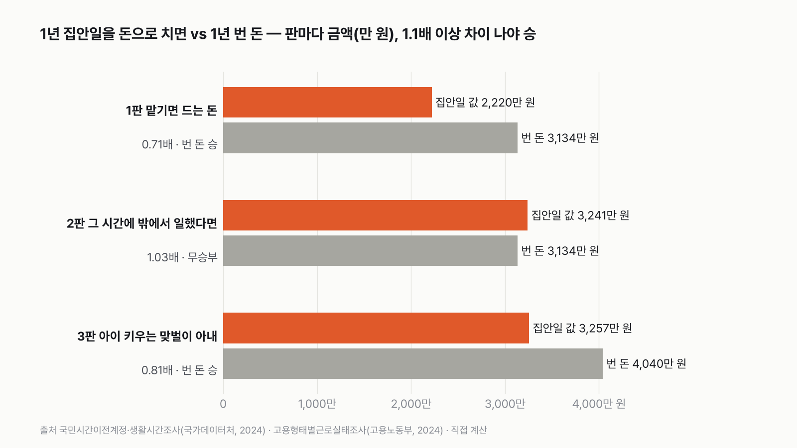
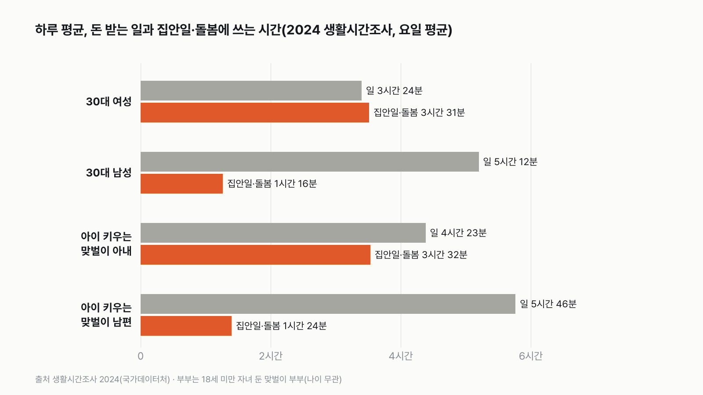
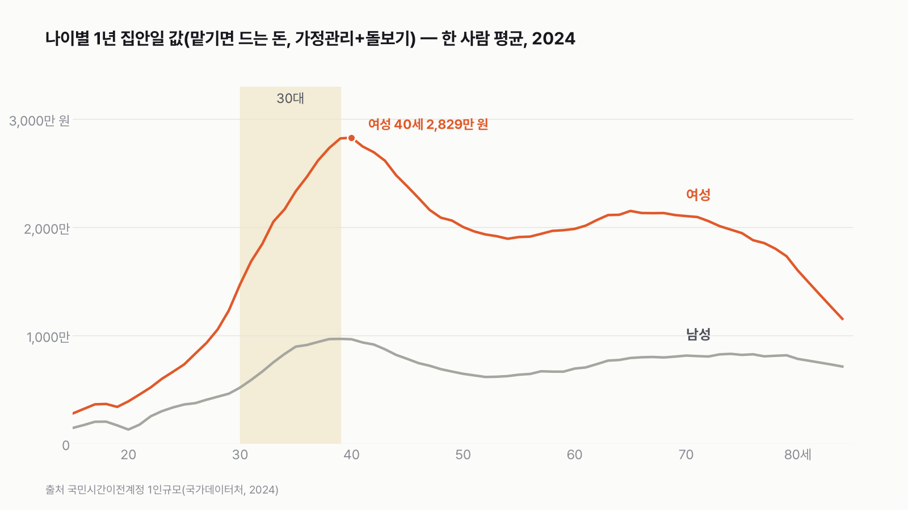
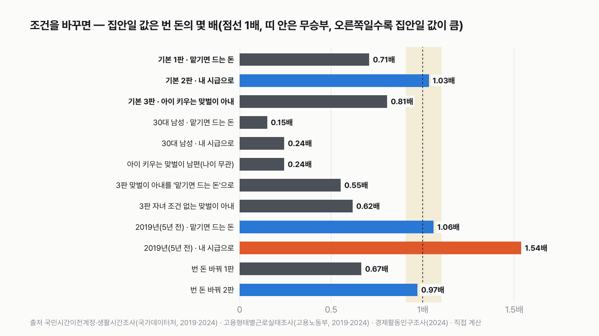

30대 여성 실험맨의 1년 집안일, 돈으로 바꾸면 1년 번 돈보다 클까
집안일에는 가격표가 없어요. 누가, 어떤 시급으로 값을 매기느냐에 따라 답이 달라져요. 5년 전 조사로 같은 계산을 하면 승부가 지금과 달라지기도 해요.
독자 투표
- 이번 실험맨은 30대 여성이에요. 하루 평균 밥하고 치우고 아이와 가족을 돌보는 데 3시간 31분, 돈 받는 일에 3시간 24분을 써요. 일을 쉬는 사람과 주말까지 섞은 하루 평균이라 짧아 보여요.
- 집안일은 월급이 안 나와요. 그래도 나라는 5년마다 이 일을 돈으로 바꿔 계산해 둬요. 30대 여성 한 사람의 1년 집안일은 2,000만 원이 넘어요.
- '사람을 써서 맡기면 드는 돈', '그 시간에 밖에서 일했으면 벌었을 돈', '아이 키우는 맞벌이 아내' 세 판으로 겨뤄요.
조건과 규칙
- 실험맨은 30대 여성 평균 한 사람이에요. 결혼한 사람과 안 한 사람, 일하는 사람과 쉬는 사람이 모두 섞인 평균이에요. 집안일 값과 임금 통계가 나이별로만 있고 결혼 여부로는 나뉘지 않아서 이렇게 세웠어요. 30대 여성은 하루 일하는 시간(3시간 24분)과 집안일 시간(3시간 31분)이 거의 같은 나이대예요. 팽팽해서 겨뤄 볼 만해요.
- 집안일은 음식 준비, 청소, 빨래, 장보기 같은 가정관리와 아이·가족 돌보기를 합친 거예요.
- 1년 번 돈은 하루 평균 일한 시간 × 365일 × 30대 여성 시급이에요. 일을 쉬는 사람의 0시간도 평균에 들어가요. 집안일 값도 같은 평균 한 사람 값이라 양쪽 조건이 같아요.
- 1판은 국가데이터처가 '그 일을 사람을 써서 맡겼다면'으로 매긴 값이에요. 2판은 '그 시간에 밖에서 일했다면'이라는 가정으로 실험맨 자기 시급을 붙여요. 집안일 1시간과 회사 1시간이 같은 일이라는 뜻은 아니에요. 3판은 18세 미만 아이를 키우는 맞벌이 부부의 아내(나이는 30대만이 아니에요)를 2판처럼 자기 시급으로 재요.
- 집안일 값이 번 돈의 1.1배 이상이면 집안일 승, 번 돈이 집안일 값의 1.1배 이상이면 번 돈 승, 그 사이는 무승부예요.
결과 요약
최종 번 돈 승(세 판에서 번 돈 2승 1무)
이건 집안일이 덜 중요하다는 뜻이 아니에요. 하루를 어떻게 나눴는지, 어떤 시급을 붙였는지를 잰 결과예요. 누가 집안일을 더 해야 한다는 얘기도 아니에요.
- 사람을 써서 맡기면 드는 돈으로 치면 1년 집안일은 2,220만 원, 1년 번 돈은 3,134만 원이에요. 0.71배라 번 돈이 이겨요.
- 같은 시간을 실험맨 자기 시급으로 치면 집안일 3,241만 원, 번 돈 3,134만 원이에요. 1.03배로 거의 같아서 비겨요.
- 아이 키우는 맞벌이 아내는 집안일 3,257만 원, 번 돈 4,040만 원이에요. 0.81배라 번 돈이 이겨요.
그래서? 집안일 시간은 일하는 시간과 거의 같아요. 승부를 가른 건 시급이에요. 1판 값을 시간으로 거꾸로 나누면 맡길 때 시급은 1만 7,294원이에요. 실험맨 자기 시급(2만 5,251원)보다 낮아서 같은 시간에 붙는 값이 작아져요.
독자 예상 vs 데이터 결과
30대 여성 실험맨의 1년 집안일, 돈으로 바꾸면 1년 번 돈보다 클까?
데이터로 보면 번 돈이 더 크다. 번 돈이 더 커요(2승 1무). 맡기면 드는 돈으로 치면 0.71배, 아이 키우는 맞벌이 아내는 0.81배로 번 돈이 이겨요. 자기 시급으로 치면 1.03배로 비겨요.


| 판 | 1년 집안일 값 | 1년 번 돈 | 배수 | 승자 |
|---|---|---|---|---|
| 1판 맡기면 드는 돈(30대 여성 평균) | 2,220만 원 | 3,134만 원 | 0.71배 | 번 돈 |
| 2판 그 시간에 밖에서 일했다면(30대 여성 평균) | 3,241만 원 | 3,134만 원 | 1.03배 | 무승부 |
| 3판 아이 키우는 맞벌이 아내 | 3,257만 원 | 4,040만 원 | 0.81배 | 번 돈 |
| 최종 | 번 돈 2승 1무 |
1.1배 이상이면 승, 안 되면 무승부예요. 세 판 가운데 집안일 값이 더 컸던 판은 없어요. 그런데 같은 사람, 같은 시급으로 잰 2판에서는 거의 딱 붙었어요.
1판 맡기면 드는 돈: 번 돈 승(0.71배)
국가데이터처는 5년마다 생활시간조사로 집안일 시간을 재고, 그 일을 가사도우미나 돌봄 인력에게 맡겼다면 얼마가 드는지로 값을 매겨요. 이 값으로 30대 여성 한 사람의 1년 집안일은 2,220만 원이에요. 가정관리가 1,227만 원, 아이와 가족 돌보기가 993만 원이에요. 1년 번 돈 3,134만 원과 견주면 0.71배라 번 돈이 이겨요.
2판 그 시간에 밖에서 일했다면: 무승부(1.03배)
같은 집안일 시간을 이번엔 실험맨 자기 시급으로 쳐요. 하루 3시간 31분이면 1년에 1,284시간이에요. 시급 2만 5,251원을 곱하면 3,241만 원이에요. 번 돈은 하루 3시간 24분, 1년 1,241시간 × 같은 시급이라 3,134만 원이에요. 시급이 같으니 결국 시간 싸움이고, 7분 차이라 1.03배로 비겨요.
3판 아이 키우는 맞벌이 아내: 번 돈 승(0.81배)
18세 미만 아이를 키우며 둘 다 일하는 부부의 아내는 하루에 일 4시간 23분, 집안일과 돌봄 3시간 32분을 써요. 일하는 시간이 길어서 번 돈 4,040만 원이 집안일 값 3,257만 원보다 커요. 집안일 시간은 30대 여성 평균과 1분 차이인데, 일하는 시간이 59분 길어요.
같은 시간, 다른 시급
1판과 2판은 같은 사람, 같은 시간이에요. 다른 건 시급 하나예요. 1판 값을 집안일 시간으로 거꾸로 나누면 '맡기면 드는 시급'은 1시간에 1만 7,294원이고, 30대 여성이 회사에서 받는 시급은 2만 5,251원이에요. 그래서 같은 1,284시간이 1판에서는 2,220만 원, 2판에서는 3,241만 원이 돼요. 집안일 값이 얼마냐는 질문의 답은 '누구의 시급으로 재느냐'에 달려 있어요.
시급이 얼마면 1판도 뒤집히나
1판에서 번 돈 쪽 시급이 지금(2만 5,251원)보다 22% 낮은 1만 9,676원 이하면 무승부가 되고, 36% 낮은 1만 6,261원 이하면 집안일 값이 더 커져요. 여기서 쓴 시급은 5명 이상 일하는 회사의 임금이에요. 더 작은 가게나 자영업까지 넣으면 시급이 내려가요. 다만 그 값을 30대 여성만 따로 잰 공식 통계는 찾지 못해서 판정에는 넣지 않았어요.


30대 남성 실험맨이라면
같은 방법으로 30대 남성 평균을 세면 하루에 일 5시간 12분, 집안일과 돌봄 1시간 16분이에요. 1년 집안일 값은 맡기면 드는 돈으로 804만 원, 자기 시급(2만 8,165원)으로 1,302만 원이에요. 1년 번 돈은 5,346만 원이라 두 방법이 0.15배, 0.24배예요. 아이 키우는 맞벌이 남편(나이 무관)은 일 5시간 46분, 집안일 1시간 24분이라 0.24배예요. 누가 더 하고 덜 하느냐를 따지려는 게 아니에요. 같은 나이에도 시간을 쓰는 방식이 다르다는 걸 보여 주는 숫자예요.
집안일 값이 가장 큰 나이는 40세
나이별로 보면 여성의 1년 집안일 값은 30대에 가파르게 올라 40세에 2,829만 원으로 가장 커요. 30세 1,471만 원에서 10년 사이에 두 배 가까이 늘어요. 아이를 돌보는 시간이 몰리는 나이예요. 남성은 39세 969만 원이 가장 커요. 65세 무렵 여성 2,152만 원, 남성 792만 원으로 한 번 더 올라가요.


자기 시급으로 치면 5년 전엔 집안일이 이겼어요
2019년 조사로 같은 계산을 하면 1판은 1.06배로 비기고, 2판은 1.54배로 집안일이 이겨요. 5년 사이 30대 여성의 하루는 일이 2시간 49분에서 3시간 24분으로 35분 늘고, 집안일과 돌봄은 4시간 20분에서 3시간 31분으로 49분 줄었어요. 같은 질문인데 5년 만에 저울이 반대쪽으로 넘어갔어요.
남편만 일하는 집이라면
아이를 키우며 남편만 일하는 집의 아내는 하루에 집안일 3시간 54분, 돌봄 2시간 59분, 모두 6시간 53분을 써요. 이 집 아내는 하루 일하는 시간이 2분이라, 번 돈 쪽 저울이 거의 비어 있어요. 이 겨루기가 성립하지 않는 집이에요. 대신 30대 여성 시급(2만 5,251원)으로 친 집안일 값은 1년 6,344만 원, 실험맨이 1년 번 돈의 약 두 배예요.


다르게 세면
- 1년 번 돈을 '고용률 71.3% × 일하는 30대 여성의 1년 임금'으로 바꾸면 3,334만 원이에요. 1판 0.67배, 2판 0.97배로 판정은 같아요.
- 3판을 '맡기면 드는 돈' 시급으로 치면 0.55배, 아이 조건 없이 맞벌이 아내 전체로 보면 0.62배로 번 돈이 더 크게 이겨요.
남는 생각
같은 하루 3시간 반이 누구의 시급으로 재느냐에 따라 2,220만 원도 되고 3,241만 원도 돼요. 우리 집 집안일 한 시간에는 얼마를 매기고 있나요?
이 숫자는 어디서 왔나요
출처
기준일 생활시간조사와 국민시간이전계정은 2024년(5년마다), 임금은 2024년 6월, 고용률은 2024년 연평균이에요. 임금은 시간·집안일 값과 해를 맞추려고 2024년 값(최신은 2025년)을 썼고, 나머지는 2026년 11월 9일에 받은 각 표의 최신 값이에요.
어떻게 셌나요
- 집안일 값(1판): KOSIS 국민시간이전계정 1인규모(DT_1NTTA1003, 2024). '가사노동 생산' 가운데 가정관리와 가족 및 가구원 돌보기를 더했어요. 자원봉사(30대 여성 1년 14만 원)는 뺐어요. 1세별 값을 30~39세 열 칸 단순 평균했어요. 이 계정은 집안일 시간을 그 일을 하는 직업의 임금으로 바꾼 값이에요.
- 시간: 생활시간조사 2024 연령대별 평균시간(DT_1TS202004, 요일 평균). 30대 여성 일 3:24, 가정관리 2:04, 가족 돌보기 1:27. 부부는 18세 미만 자녀 둔 맞벌이·외벌이 부부 표(DT_2024_001_1TM0001X)와 자녀 조건 없는 부부 표(DT_2019_058_1TM1A81X)예요. 하루 평균 × 365 = 1년 시간이에요.
- 시급: 고용형태별근로실태조사(DT_118N_PAY0004, 2024년 6월, 5명 이상 사업체). 30~34세·35~39세 여성의 월임금총액 ÷ 총근로시간을 근로자 수로 가중했어요. 월 389.7만 원, 154.3시간이에요. 남성은 465.2만 원, 165.2시간이에요.
- 2019년 비교: 같은 표의 2019년 값(생활시간조사·국민시간이전계정 2019, 임금 2019년 6월)이에요.
- 확인용 고용률: 경제활동인구조사(DT_1DA7012S) 2024년 30대 여성 71.3%, 남성 88.0%.
- 맡기면 드는 시급: 1판 집안일 값 ÷ 1년 집안일 시간 = 22,197,889원 ÷ 1,283.6시간 = 1만 7,294원.
한계 6가지
이 데이터로 말할 수 없는 것
- 실험맨은 결혼 여부를 따지지 않은 30대 여성 평균이에요. 결혼한 30대 여성만 따로 본 집안일 값·임금 통계는 없어요. 결혼한 쪽은 3판(나이 무관 맞벌이 아내)으로만 봤어요.
- 3판 부부 시간은 나이 조건이 없어요. 30대와 40대가 많지만 다른 나이도 섞여 있어요. 시급은 30대 여성 값을 그대로 썼어요.
- 시급은 5명 이상 사업체 임금근로자 값이에요. 작은 가게와 자영업자가 빠져서 실제 평균보다 높을 수 있어요. 높을수록 번 돈 쪽이 유리해요.
- 1년 번 돈은 생활시간조사의 일 시간에 시급을 곱한 값이에요. 실제 연봉에는 성과급과 수당이 섞여 있고, 생활시간조사의 '일'에는 일 사이 쉬는 시간도 조금 들어 있어요.
- 집안일 값은 1세별 값을 단순 평균했어요. 나이별 인구 수 차이는 반영하지 않았어요.
- 주제를 고르면서 원자료 값(집안일 시간, 국민시간이전계정 값, 임금, 고용률)을 먼저 봤어요. 판과 기준선은 그 값을 본 뒤에 정했어요.
다음 대결
대결 다 보기실험맨 vs 고양이 그루밍
실험맨 vs 고양이, 세 판 승부로 하루 씻고 꾸미는 시간이 더 긴 쪽은 누굴까?
A실험맨vsB고양이
투표하러 가기
대결실험맨투표했어요기린 승고3 vs 기린
고3 실험맨과 기린, 하루에 누가 더 적게 잘까?
A고3vsB기린
투표하러 가기
대결실험맨투표했어요60세 이상 승60세 이상 vs 20대
60세 이상 여성 실험맨과 20대 여성 실험맨, 하루 사람을 만나 어울리는 시간은 누가 더 길까?
A60세 이상 여성vsB20대 여성
투표하러 가기
대결실험맨투표했어요결과: 절반 넘는다실험맨 vs 혼밥
50대 남성 실험맨, 저녁을 대체로 가족과 함께 먹는 사람이 100명 중 절반을 넘을까?
A절반 넘는다vsB절반 못 넘는다
투표하러 가기
대결실험맨투표했어요결과: A실험맨 vs 월세
서울에 혼자 사는 20대 여성 실험맨, 작은 오피스텔 월세가 월급의 3분의 1을 넘을까?
A3분의 1 못 넘는다vsB3분의 1 넘는다
투표하러 가기
대결실험맨투표했어요결과: B실험맨 vs 결혼식
30대 신혼부부 실험맨, 둘이 석 달 번 돈으로 결혼식 하루 비용을 낼 수 있을까?
A석 달이면 낸다vsB석 달로는 모자란다
투표하러 가기
대결실험맨투표했어요무승부실험맨 vs 등록금
20대 여성 실험맨이 1년 동안 영상·SNS 보는 시간, 최저시급으로 치면 대학 1년 등록금을 넘을까?
A넘는다vsB못 넘는다
투표하러 가기
대결실험맨투표했어요코알라 승실험맨 vs 코알라
잠·평일·주말 세 판 승부, 실험맨과 코알라 중 누가 이길까?
A실험맨vsB코알라
투표하러 가기
새 글 나오면 받아 보기
피드 리더 앱에 이 사이트 주소를 한 번 넣어 두면, 새 글이 올라올 때 앱에 떠요. 가입이나 메일 주소는 필요 없어요.
받는 법 보기
- 피드 리더 앱을 하나 골라요. 새 글을 모아 보여 주는 앱이에요. 예를 들면 Feedly나 Inoreader가 있어요. 둘 다 무료고 웹·휴대폰에서 써요.
- 앱에서 '구독 추가'(+)를 누르고 아래 주소를 붙여 넣어요.
- 끝이에요. 새 글이 올라오면 앱 목록에 떠요.
https://protofu.github.io/opendata-insight/feed.xmlFeedly를 쓴다면 여기를 눌러 바로 추가할 수도 있어요.